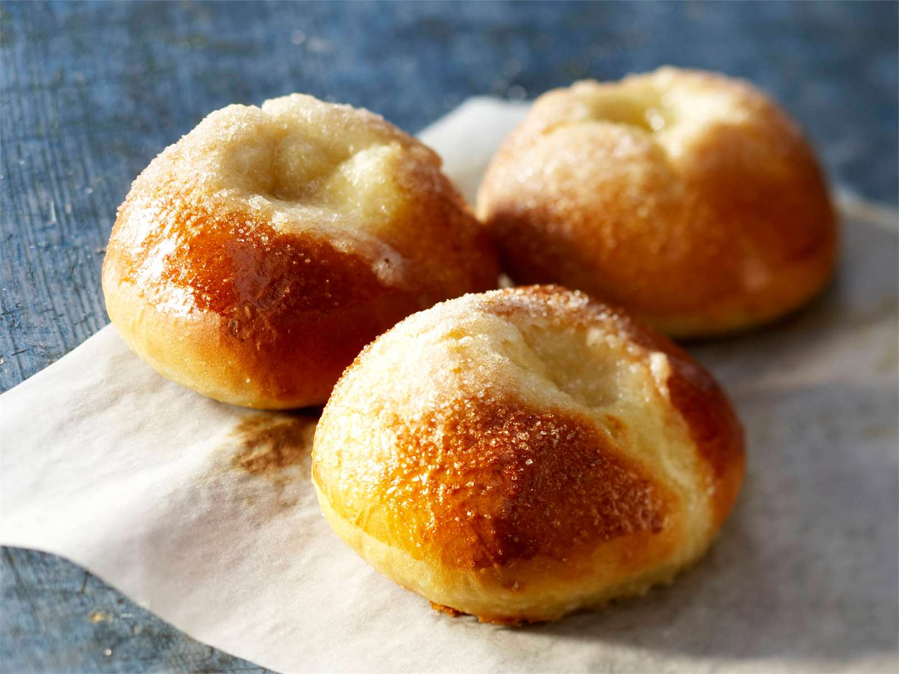

PULLATAIKINA:

AINEKSET:
- 2 1/2 dl maitoa tai vettä
- 25g hiivaa (1 pussi)
- 1/2 tl suolaa
- (1-2 tl kardemummaa)
- 1 muna
- 3/4-1 dl sokeria
- noin 7 dl jauhoja
- 75 g margariinia tai 1/2 dl öljyä
OHJEET:
- Lietä hiiva kädenlämpöiseen nesteeseen. Lisää muna, sokeri, mausteet ja ylipuolet jauhoista haarukkavatkaimella sekoittaen.
- Lisää jauhoja vähitellen. Alusta taikinaa koko ajan toisella kädellä.
- Lisää huoneenlämpöinen rasva. Jatka alustamista, kunnes taikina irtoaa kulhon reinoista ja kädestä.
- Kohota taikina leivinliinalla peitettynä noin kaksinkertaiseksi.
- Alusta kohottunutta taikinaa, kunnes se on jälleen kiinteää.
PULLIEN VALMISTUS:
- Valmista mieleisiäsi pullia esim. voisilmäpullia tai korvapuusteja.
- Kohota pullia pellillä leivinliinalla peitettynä.
- Pane uuni kuumenemaan 225 °C:seen
- Voitele pullat kananmunalla tai voilla ennen paistamista ja koristele halutessasi esimerkiksi raesokerilla.
- Paista pullia uunin keskitasossa noin 10 minuttia.